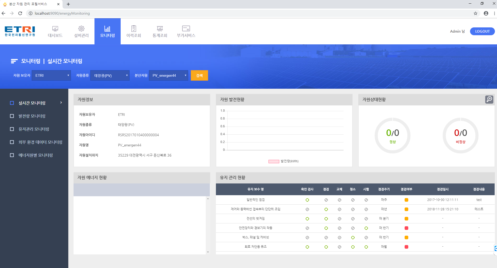

Main
Projects:
- - 에너지자원 시스템 (19년 7월 ~ 19년 11월)
- - 개발 인원 : 2명
- - 담당 업무 : WEB 유지보수
에너지자원 프로젝트는 에트리와 같이 협업한 프로젝트로 태양광, 에너지 저장장치 상태 및 각 지역별 발전량을 확인할 수 있는 관리자용 사이트입니다.
약 3개월간 유지보수를 맡아 진행했고, 주 업무는 API재설계, 쿼리수정을 했습니다.
Production 수준의 Spring Boot 프로젝트에 처음 투입되어 Spring Security와 Mapper를 공부하는데 많은 도움되었고, 공공지도 API와 웹 크롤링을
처음사용 해본 프로젝트입니다.
Technologies:
- - JAVA
- - Spring Boot Framework
- - Thymeleaf
- - MySQL
- - MyBatis
- - 공공지도 Maps API
발전량 모니터링 Page:
실시간 모니터링 Page:
